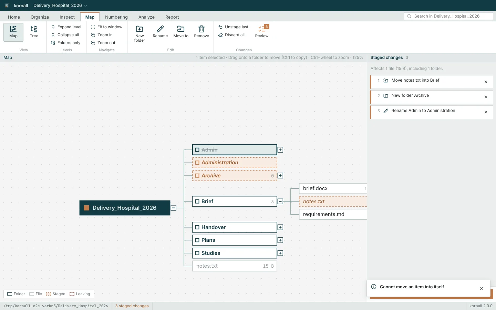
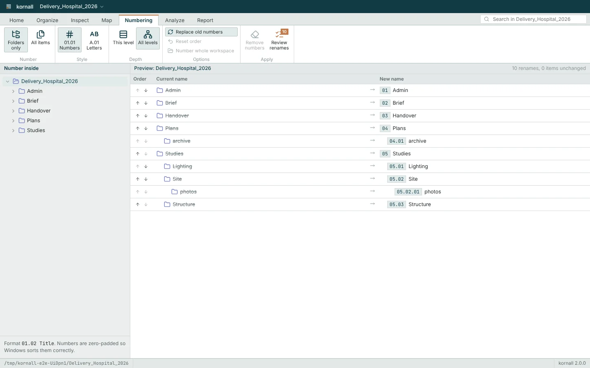
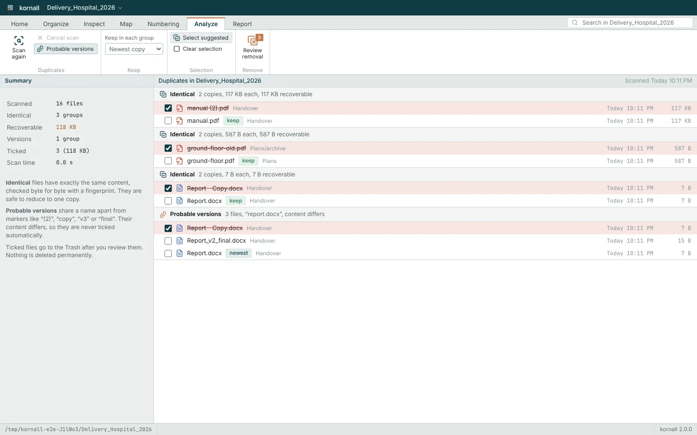
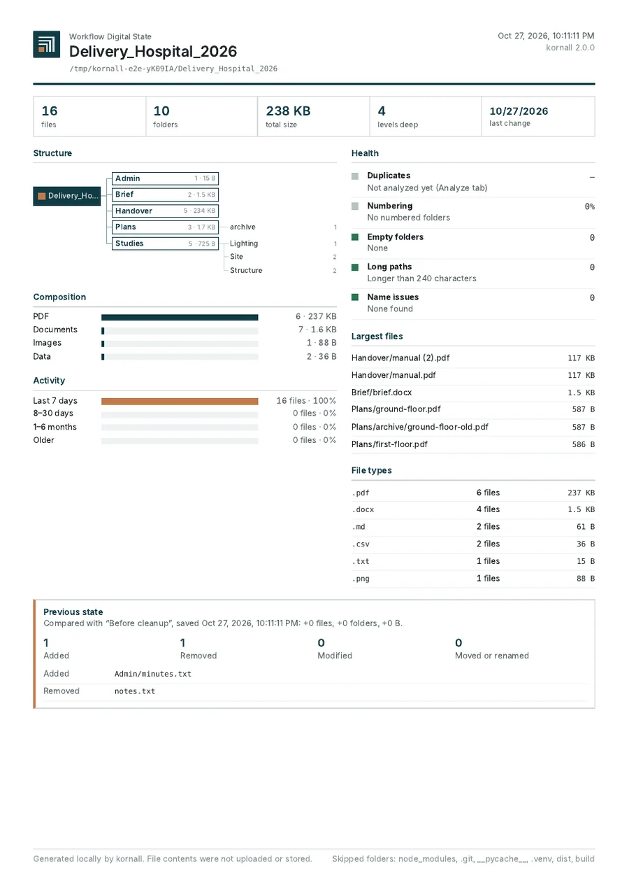

Map
See the whole workspace as a tree. Drag folders where they belong; changes stay drafts until you approve them.
kornall maps your workspace, numbers it for delivery, finds duplicate files and writes a one-page state report. On your Windows PC, fully offline.
No card needed for the trial. Then €27 a year or €2.80 a month, cancel anytime.

Four steps, each in its own tab, in the order you work.
See the whole workspace as a tree. Drag folders where they belong; changes stay drafts until you approve them.
Name everything 01, 01.01, 01.02, or A, A.01. Reorder with arrows, preview every new name, apply in one go.
Find identical files by content and old versions by name. Keep one copy; the rest go to the Recycle Bin.
Produce the Workflow Digital State: one page with structure, contents, activity and health. Export to PDF.
Choose folders only or every file, one level or all of them, numbers or letters. kornall shows the old and new name of every item before anything changes, keeps the order you set, and replaces old numbers cleanly.


Identical files are matched byte for byte, whatever their names. Probable versions such as "Report (2)", "copy" or "v3 final" are shown separately and never ticked for you.
The Workflow Digital State fits on one A4 page: how many files and folders, how deep the structure goes, which types fill it, what changed recently, and whether anything needs attention.

Try every feature for 7 days. Then choose the plan that fits.
One person, up to 2 PCs
€27 / year
That is €2.25 a month, billed once a year
Buy PersonalOr try it free for 7 days, no card needed
Licence packs for teams
€24.00 / seat / year
100 licences: €2,400.00 a year, excluding VATExample price
Buy 100 licencesInvoice with your company VAT number
More than 300 seats or specific needs
On request
Custom volume, deployment help, contract terms
Contact salesAnswer within [2] business days
Personal prices include VAT. Compare plans in detail
No. kornall runs on your PC and works without an internet connection. It only reads the folders you open and never uploads them.
Choose a plan to keep using kornall. Without one, the app stops applying changes; your folders stay exactly as they are.
Yes, at any time from your account. kornall keeps working until the end of the month you paid for.
One Personal licence activates kornall on two computers you use, for example a desktop and a laptop. You can move an activation to a new PC from your account.
Windows 10 and Windows 11, 64-bit.
kornall never deletes anything permanently. Every change is shown for review first, removed files go to the Recycle Bin, and moves, renames and copies can be undone.
kornall 2.0 for Windows 10 and 11. Free for 7 days.